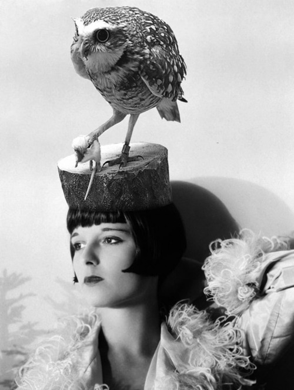

Thursday, November the 15th, 2012
back to: title, date or indexes
Had she not died ten years ago, yesterday would have been the 105th birthday of Louise Brooks. To celebrate, the splendid Bestiary posted a photograph of her with an owl on her head.

At least I think it's an owl. Outa_Spaceman, to whom I am once again indebted for alerting me to the snap, thinks it is either an owl or a hawk of some kind.